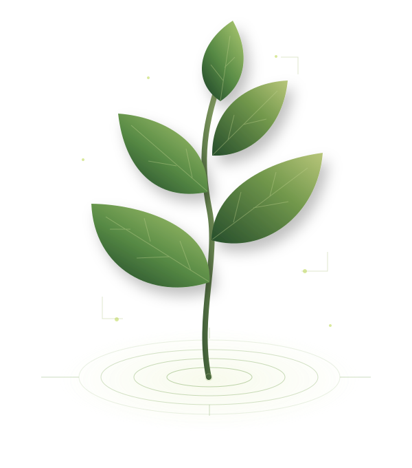

Agrícola
Bagaço de cana, palha e resíduos de culturas.
Conhecer a fonte
Sobras da colheita e do processamento podem alimentar sistemas de geração de calor e eletricidade.
— O FUTURO TEM RAÍZES
Da matéria orgânica à energia.
Uma nova perspectiva sobre o que a natureza produz
— e sobre o que fazemos com o que sobra.

01 / O CONCEITO
MARIAMatéria orgânica de origem vegetal ou animal que pode ser utilizada como fonte de energia.
Ela está nas plantas, na madeira e nos resíduos do nosso dia a dia. Com a tecnologia adequada, esses materiais podem produzir calor, eletricidade e combustíveis.
Um resíduo pode se tornar
um recurso energético.
02 / AS ORIGENS
KAUÃDiferentes origens.
Um potencial em comum.
Bagaço de cana, palha e resíduos de culturas.
Sobras da colheita e do processamento podem alimentar sistemas de geração de calor e eletricidade.
Madeira, lenha, serragem e resíduos florestais.
A origem responsável da madeira e o manejo florestal são essenciais para esse aproveitamento.
Resíduos orgânicos e restos de alimentos.
A separação dos resíduos facilita o tratamento da fração orgânica e seu uso na produção de biogás.
Esterco e outros resíduos da criação de animais.
Em biodigestores, microrganismos decompõem a matéria orgânica e produzem biogás.
03 / A TRANSFORMAÇÃO
JORGEAcompanhe o caminho da transformação.
Selecione uma etapa para descobrir.
Resíduos vegetais ou animais são coletados e selecionados conforme o processo de aproveitamento.
Na combustão, a queima libera calor, que produz vapor e movimenta uma turbina conectada ao gerador. Em outra rota, o biogás pode alimentar motores geradores. Nem toda aplicação passa por uma turbina.
04 / AS POSSIBILIDADES
KAUÃCombustíveis de biomassa podem ser sólidos, líquidos ou gasosos.
O uso depende do material e da tecnologia.
Geradores convertem movimento em energia elétrica para diferentes atividades.
ENERGIA QUE CONECTAA combustão pode fornecer calor para aquecimento e processos industriais.
ENERGIA QUE AQUECEA decomposição sem oxigênio produz um gás combustível, que pode ser tratado.
ENERGIA QUE SE RENOVAEtanol e biodiesel são exemplos de combustíveis obtidos de matérias orgânicas.
ENERGIA QUE MOVE05 / O POTENCIAL
LUCASMais valor para os materiais.
Novas possibilidades para as comunidades.
Materiais descartados ganham uma finalidade energética.
Quando há reposição e manejo adequado dos recursos.
Possibilidade de produzir os dois em sistemas de cogeração.
Resíduos orgânicos podem se tornar combustível.
Materiais do processo podem ter outros usos, após avaliação e tratamento.
Potencial para gerar trabalho e renda nas cadeias de produção.
06 / UM OLHAR CRÍTICO
LUCASO resultado depende de como ela é produzida, transportada e utilizada.
+ O QUE PODE OFERECER
! O QUE EXIGE ATENÇÃO
Renovável não significa impacto zero. Tecnologia, planejamento e manejo fazem a diferença.
07 / NOSSO CONTEXTO
DJALMAUma conexão entre o campo e a energia.
A forte atividade agrícola brasileira gera resíduos que podem ser aproveitados energeticamente. O setor sucroenergético é um exemplo dessa integração.
Nas usinas, o bagaço pode abastecer caldeiras para produzir vapor, calor de processo e eletricidade.
08 / O PRÓXIMO PASSO
DJALMAInovar também é descobrir
novos usos para o que já existe.
Tecnologias mais eficientes e controle de emissões.
Maior aproveitamento de materiais e subprodutos.
Novas aplicações para o biogás e o biometano.
Integração com outras renováveis e desenvolvimento de soluções mais sustentáveis.
09 / PARA LEVAR COM VOCÊ
A biomassa pode transformar matéria orgânica e resíduos em recursos energéticos. Para isso, precisamos de tecnologia, planejamento e manejo adequado.
VOLTAR AO INÍCIOCONHECIMENTO COMPARTILHADO
Cinco vozes.
Uma ideia em transformação.
O que é biomassa?
Como a biomassa gera energia?
Tipos e fontes de biomassa
Vantagens e desafios
Biomassa no Brasil e futuro